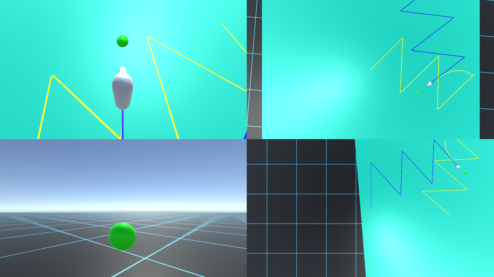

Redirected Walking
Of the Redirected Walking Toolkit and Resetters
 The Redirected Walking Toolkit's UI
The Redirected Walking Toolkit's UI
Once I had settled on redirected walking, I didn’t want to have to implement it all myself. I was sure, someone had already done that - and I was right.
The Redirected Walking Toolkit
 The redirected walking toolkit was released in 2016 by researchers from the USC Institute for Creative Technologies. It was intended to provide a way to examine and evaluate different redirected walking techniques. It can be run in a simulated mode, a keyboard controlled mode, and a physically space-tracked mode. I thought “Great, I can just use the physically space-tracked mode and I’m basically done, right?”. Well, not quite. Firstly, the toolkit is designed to be “easily” expandable. This translates to a lot of interfaces and class abstractions, making the task of understanding how the toolkit works rather tedious. Secondly, it’s just the publication of a research project. Therefore, the code isn’t tidy at all, containing loads and loads of commented lines and cryptic annotations. Thirdly, the project was last updated nine years ago. So just copying the files to my Unity project didn’t work.
After a lot of struggling, a lot of cursing, and a lot of asking Chatbots and googling, I managed to add the toolkit to my project. However, I didn’t get the normal redirection to work, because it required predetermined waypoints. Even though I placed these in the world space, I didn’t get the redirection to work.
Two-One-Resetter Locomotion
The resetter on the other hand actually worked right out of the box (once the box had been added to the project properly). The resetter’s purpose it to reset the user if he deviates from his path and is about to wander out of his physical space. In particular a two-one-resetter works as follows. First the user reaches a border within his physical space, signalling that he is about to wander out of it. The resetter instructs the user to spin in place. Physically the user spins 180 degrees. However, the resetter injects additional rotation in a way that the user spins 360 degrees in the virtual world. Through this the user is facing into his physical space again, while continuing in the same virtual direction as before. And it worked!
But as you can see the locomotion was mind-numbingly slow - or the parkour just too large. How might I ever overcome this? Read the next entry to find out.